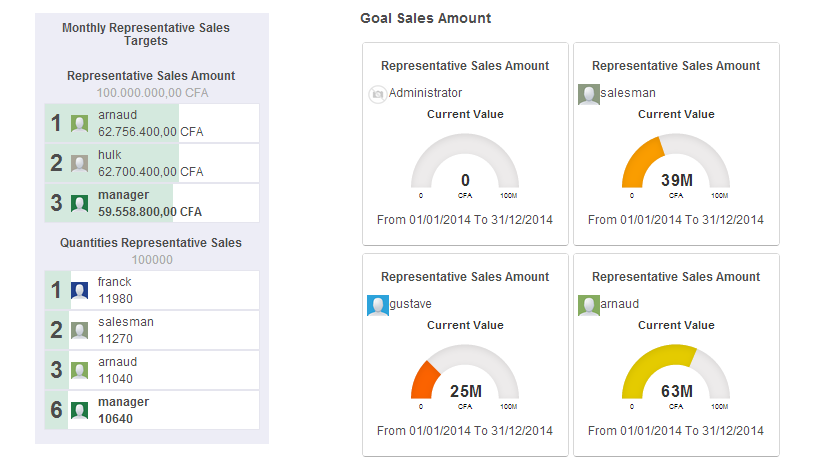
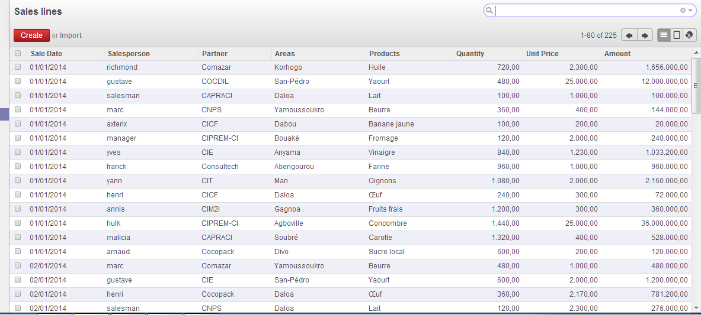
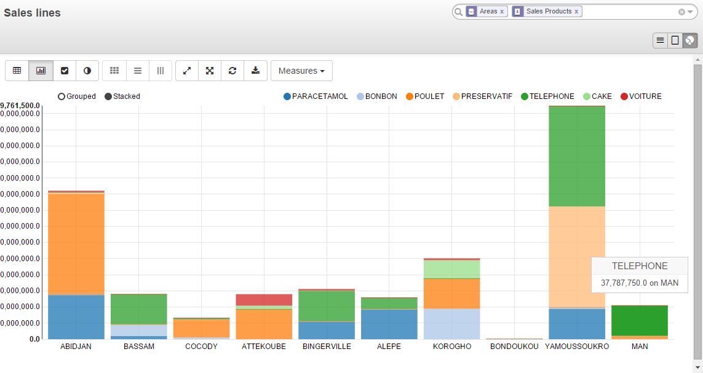
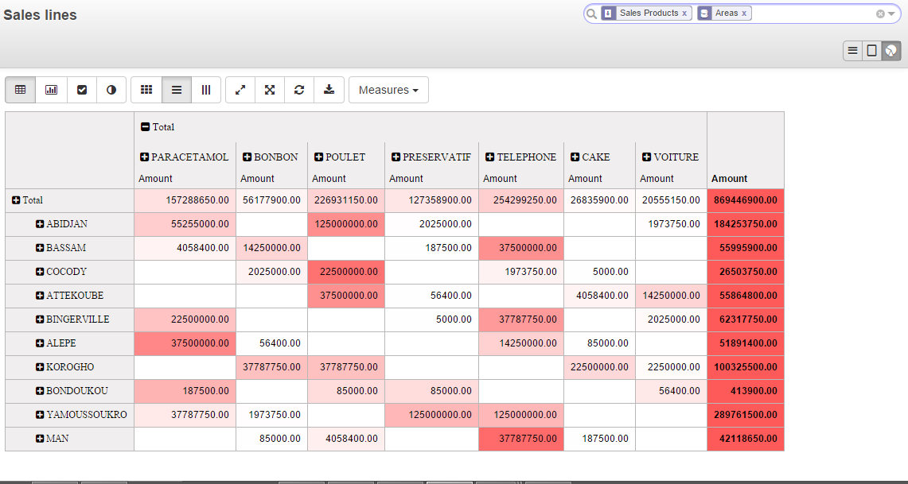
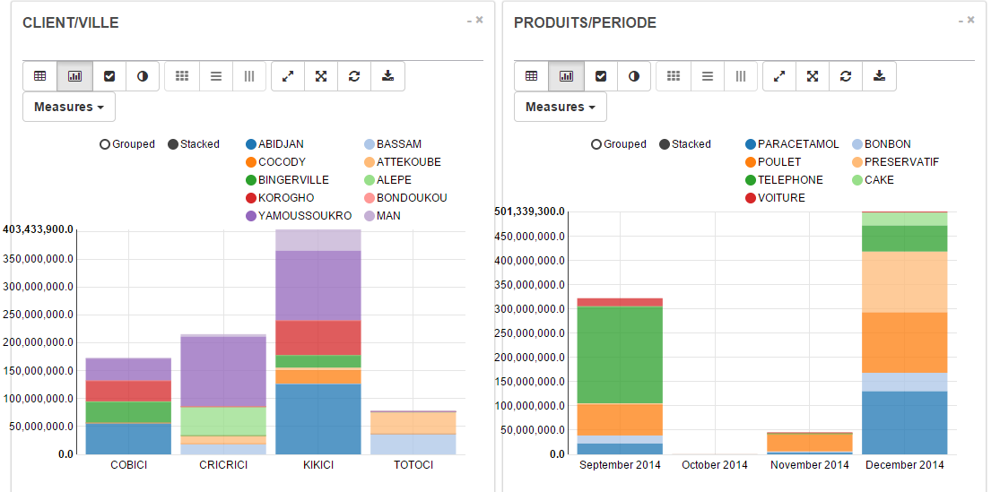

| CRM REPRESENTATIVE By Africa
Performances |
Analysez les volumes, valeurs de ventes et
fixez des objectifs par Produit, par Client, par Commercial, par Zone...
Utilisez les graphes dynamiques de Odoo pour concevoir des reporting
percutants. |
| 1 - Fixez vos objectifs de Vente par Produit,
par Client, par Commercial, par Zone... |
|
 |
|  |
|
2 - Collectez vos
données de ventes... |
3
- Analysez les volumes et valeurs des ventes sur de nombreux axes!!!
Utilisez les graphiques dynamiques de Odoo pour concevoir des reporting
percutants.
Enchainez les bandes, courbes ou diagrammes circulaires et
utilisez la fonctionnalité Heat Map pour mettre en exergue
les
tendances... |
|  |
|
 |
 |
|
 |
|
|
|
| Combinez le suivi des prospects et des
négociations en équipe du
CRM et à la possibilité de pouvoir definir des
objectifs (Gamification)... |